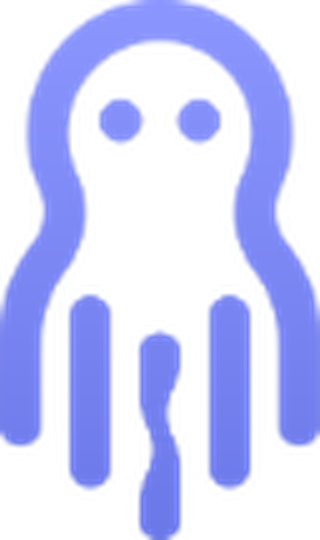

Исчерпывающая аналитика
Полная картина рекламной активности рынка и конкурентов в одном окне — без слепых зон.
Octopus — AI-платформа с собственными технологиями мониторинга рекламы для формирования полной картины активности рынка и конкурентов.
Octopus — AI-платформа с собственными технологиями мониторинга рекламы для формирования полной картины активности рынка и конкурентов.
Octopus — AI-платформа с собственными технологиями мониторинга рекламы для формирования полной картины активности рынка и конкурентов.
Octopus — AI-платформа с собственными технологиями мониторинга рекламы для формирования полной картины активности рынка и конкурентов.
Octopus — AI-платформа с собственными технологиями мониторинга рекламы для формирования полной картины активности рынка и конкурентов.

Полная картина рекламной активности рынка и конкурентов в одном окне — без слепых зон.
Обновления уже через час после запуска кампаний — вы узнаёте о движениях рынка раньше всех.
Видно, как меняется активность брендов день за днём и сезон за сезоном.
ТВ, наружная, онлайн-видео, баннеры и маркетплейсы — в едином сопоставимом отчёте.
Кто и сколько инвестирует в каждой нише и сегменте рынка.
Ваша доля голоса против ключевых игроков сегмента — без догадок и домыслов.
Данные под рукой: дашборды, экспорт и уведомления в Telegram.